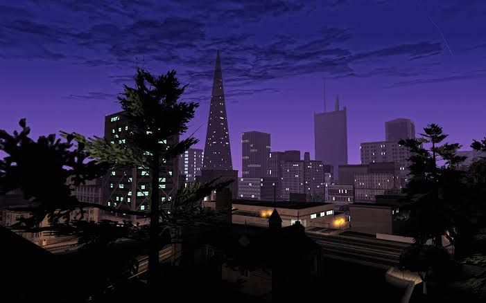

Les damos paso a esta sencilla faceta informativa sobre las 3 fantásticas
ciudades de San Andreas.
¿Qué veremos por aquí?
Presentamos una vista previa de las bellezas únicas que da cada ciudad junto
a datos informativos sobre su cantidad de población, economía, transportes autorizados, etc...
además de otorgarles ciertas recomendaciones para la mejor experiencia posible!
Comencemos!
Los Santos
Población:
3.000.000 habitantes.
Presupuesto:
$12.500.000.000 USD
Transportes:
Avión, Tren y Taxis Oficiales.
Consejos viables:
En lo posible evite vestir prendas de color Morado o Verde.
Si presencia una persecución policial, refúgiese en el "Burger Shot" más cercano.
San Fierro

Población:
800.000 habitantes
Presupuesto:
$8.200.000.000 USD
Transportes:
Tranvía, Tren y Aeropuerto Easter Bay.
Consejos viables:
Discreción al pasar por el distrito financiero, evite contacto visual con individuos en traje de vestir.
Atención al cruzar las calles.
Las Venturas
Población:
500.000 habitantes.
Presupuesto:
$18.900.000.000 USD
Transportes:
Taxis, Autopistas y Aeropuerto LV
Consejos viables:
Ciudad concentrada en casinos, recuerde: LA CASA SIEMPRE GANA.
Al extremo de la zona norte de la ciudad se encuentra una base militar,
el acceso está LETALMENTE PROHIBIDO.